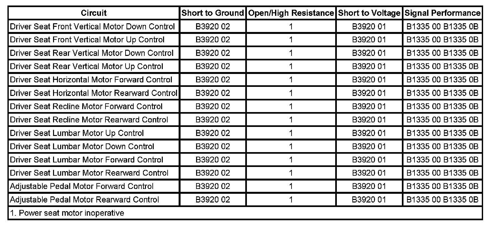

B1335
DTC B1335
DTC DESCRIPTOR
DTC B1335 00
Device Power 3 Circuit
DTC B1335 0B
Device Power 3 Circuit Current Above Threshold
DTC B1335 42
Device Power 3 Circuit Calibration Data Set Not Programed
DTC B1335 4B
Device Power 3 Circuit Calibration Not Learned
DIAGNOSTIC FAULT INFORMATION

Perform the Diagnostic System Check - Vehicle prior to using this diagnostic procedure. Initial Inspection and Diagnostic Overview
CIRCUIT/SYSTEM DESCRIPTION
The memory seat module (MSM) monitors the current supplied to the seat adjuster motors. The MSM can detect both absolute and differential current levels from the seat motors. Absolute current is the maximum allowable current the module will supply to the motors. A differential current mismatch occurs when the current supplied to the seat motors does not match the current returning from the motors.
CONDITIONS FOR RUNNING THE DTC
The MSM establishes that it is not closing to a shorted motor control circuit before the motors are active.
CONDITIONS FOR SETTING THE DTC
The following conditions exist for more than 1 second:
B1335 00
Current out of the module does not match the current returning to the module within 5 amps.
B1335 0B
The absolute current or an over-current has exceeded the maximum value allowed.
B1335 42
This DTC will set if the module calibration is not programmed.
B1335 4B
This DTC will set if the module calibration is out of range.
ACTION TAKEN WHEN THE DTC SETS
The adjustable pedal motor and all driver seat adjuster motors are disabled.
CONDITIONS FOR CLEARING THE DTC
- The current DTC will clear and set the code to history, 3 seconds after no motor movement is requested or the current is no longer mismatched, and the ignition is cycled OFF then back to ACC or RUN.
- A history DTC will clear after 50 ignition cycles or with a scan tool using the clear DTCs function.
MODULE INTERNAL MALFUNCTION
If DTCs B1335 42 or B1335 4B are set history or current, the only option is module replacement.
CIRCUIT/SYSTEM TESTING
1. Use a scan tool to clear the current and history diagnostic trouble code.
2. Ignition ON, while observing the scan tool for DTCs, operate the seat adjuster switch in both directions for each directional motor.
3. Disconnect the suspect seat motor for which the DTC set.
4. Clear the current and history diagnostic trouble code.
5. While observing the scan tool for DTCs, operate the suspect seat motor adjuster switch in both directions.
- If the DTC set current or history, test the motor control circuits for a short to ground, or an open/high resistance. If the circuits test normal, replace the memory seat module.
6. If all circuits/connections test normal, replace the seat motor.
REPAIR INSTRUCTIONS
Perform the Diagnostic Repair Verification after completing the diagnostic procedure.
- Front Seat Recliner Actuator Motor Replacement
- Front Seat Lumbar Support Replacement (Power)
- Front Seat Adjuster Replacement (Power)
- Brake Pedal Assembly Replacement
- Control Module References for MSM replacement, setup, and programming Verification Tests Programming and Relearning